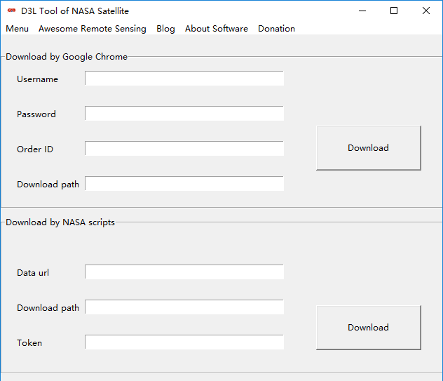
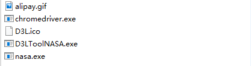

Introducing D3L Tool of NASA Satellite 1.0
D3L Tool of NASA Satellite is a free software tool that serves as a tool to download the nasa satellite data easily.
D3L Tool of NASA Satellite was developed by Mr. Dai . The program provides a graphical interface to download satellite imagery from NASA, such as MODIS products, MERIS and more. Due to new NASA Policies LAADS FTP servers (both public and private) will be shutting down around Monday, April 20th 2018. NASA provide some scripts to download, but it's a little hard for some people who didn't use python. So I have developed the D3L Tool of NASA Satellite.
Main Interface

D3L Tool of NASA Satellite runs on Windows
Getting Started With D3L Tool of NASA Satellite
The entire software include five files. As the picture showed.

Double click the D3LToolNASA.exe and start your download of NASA satellite.
Dependencies
D3L Tool of NASA Satellite is released under a MIT license. It builds on several open source libraries and source-code files. Below is the list of the key projects that we would like to acknowledge.
tkinter Cross-Platform GUI Library, version 8.5. License: BSD-style License. Authors: Many. Links: http://www.tcl.tk
selenium Libraries, version 3.4.3. Authors: Many. License: Apache 2.0 License. Links: https://www.seleniumhq.org/
Pyinstaller Library, version 3.3. Authors: Gordon McMillan and William Caban. License: GPL license. Links: http://www.pyinstaller.org/
laads-data-download.py source code. Author: Tristan Quaife. License: Use laads-data-download.py in included source files. Links: https://ladsweb.modaps.eosdis.nasa.gov/tools-and-services/data-download-scripts/#python
Acknowledgments
The development of D3L Tool of NASA Satellite has been supported by Tristan Quaife, MorvanZhou and NASA. Special thanks for GeoDa.
Support
We are currently updating the homepage to reflect the new feature of D3L Tool of NASA Satellite 1.0.
License
D3L Tool of NASA Satellite uses a MIT License.
Contact
Questions? Contact us.
Viewtimes Vistorsperson-times